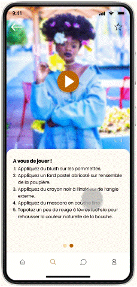
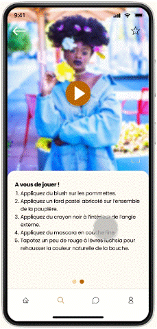

BEAUTIFY
Conception d'une plate-forme inclusive et intuitive pour rendre la beauté accessible à toutes et tous.
Catégorie : Projet universitaire
Période : Janvier - Mai 2022 (1 semestre universitaire)
Mentors : François Violette, Marie Girard
Format : Mobile
Introduction
De vos caractéristiques physiques à votre type de peau, votre beauté est unique : il n'y en a aucune autre comme la vôtre. Mais à l'ère de l'information de masse, trouver les produits et techniques appropriés qui mettront en valeur VOS caractéristiques physiques devient de plus en plus difficile – particulièrement dans un univers dominé par les personnes blanches, jeunes et cisgenres féminines.
Notre mission
Aider tous nos utilisateurs à trouver facilement les produits et techniques correspondants à leurs caractéristiques physiques grâce à une plate-forme intuitive et inclusive.
Entretiens utilisateurs
Pour la phase de recherche utilisateur, nous avons organisé une série d'entretiens avec des utilisateurs cible afin d’identifier leurs attentes, leurs motivations et leurs frustrations.
Questions & Insights
Quelles sont les raisons qui vous encouragent à porter du maquillage / à apprendre à mettre du maquillage ?
Toutes les personnes interrogées ont mentionné la confiance en soi comme principale raison de porter du maquillage.
À quels critères êtes-vous attentif lors de l'achat de produits de beauté ?
Les personnes interrogées sont principalement attentives :
- aux ingrédients ("à quel point est-ce chimique et comment ma peau va-t-elle réagir ?"),
- au prix ("est-ce dans mon budget ?"),
- à l'éthique de la marque ("est-ce cruelty-free ?"),
- à la facilité d'utilisation.
Quelles techniques de maquillage que vous ne maîtrisez pas encore aimeriez-vous apprendre ? Qu'est-ce qui vous en a empêché jusqu'à présent ?
Les personnes interrogées ont toutes mentionné différentes techniques de maquillage qu'elles aimeraient apprendre. Les techniques mentionnées semblent correspondre à leur niveau respectif : les débutants ont mentionné des techniques de base comme l'application de rouge à lèvres ("quelle teinte dois-je choisir en fonction de ma couleur de peau ?"), tandis que les personnes de niveau avancé ont mentionné des techniques plus complexes comme le contouring ("je ne comprends pas la forme de mon visage"). La principale raison mentionnée pour ne pas apprendre ou maîtriser ces techniques est de ne pas savoir par où commencer en raison de la multitude de contenus beauté disponibles.
Où cherchez-vous habituellement de l'inspiration ou des conseils de maquillage ?
Les personnes interrogées plus jeunes aiment regarder des vidéos YouTube ou TikTok pour l'inspiration maquillage tandis que les personnes plus âgées préfèrent les articles de magazines.
Dans quelle mesure vous sentez-vous généralement représenté dans les médias de beauté (en fonction de votre couleur de peau, âge, etc.) ?
Les personnes interrogées non blanches, masculines et plus âgées se sentent sous-représentées dans les médias de beauté.
Analyse compétitive
| Sephora | Nocibe | Cosmopolitan | kleo beaute | MarionCameleon | |
|---|---|---|---|---|---|
| Type de site web | Vente en ligne | Vente en ligne | Site de magazine | Blog | Chaîne YouTube |
| Vente de produits | ✓ | ✓ | ✗ | ✗ | ✗ |
| Actualités | ✓ | ✗ | ✓ | ✓ | ✗ |
| Tutoriels | ✓ | ✓ | ✗ | ✓ | ✓ |
| Commentaires | ✓ | ✓ | ✗ | ✓ | ✓ |
| Conseils génériques | ✓ | ✓ | ✗ | ✓ | ✓ |
| Conseils personnalisés | ✗ | ✗ | ✗ | ✗ | ✗ |
| Représentation | Satisfaisante | Satisfaisante | Satisfaisante | Limitée | Limitée |
Persona
![Selena Lenerand, 23 ans
Selena est une jeune étudiante introvertie à l'Université de Paris. Elle est socialement maladroite, et elle voudrait apprendre à porter du maquillage pour mettre en valeur ses caractéristiques physiques dans le but de l'aider à se sentir plus jolie et avoir plus confiance en elle. Malheureusement, ses recherches sur les produits de beauté et les techniques de maquillage finissent toujours par la mener dans des spirales de recherche Google qui lui prennent tout son temps alors qu'elle devrait étudier, ce qui la conduit à abandonner.
Profession : Étudiante
Statut : Célibataire
Localisation : Paris, France
Traits : Travailleuse, Impatiente, Créative
« Je veux porter du maquillage pour renforcer ma confiance, mais je n'en porte pas car je ne sais pas comment choisir les bons produits. »
Marques préférées : Fenty Beauty, The Ordinary, Sézane
Personnalité : Introvertie, un peu bordélique, assez occupée.
Objectifs : Trouver des marques de fond de teint qui correspondent non seulement à sa couleur de peau (noire) mais aussi à son type de peau (sèche et sensible), Découvrir comment prendre soin de ses cheveux bouclés.
Frustrations : Trop de temps passé à naviguer sur internet pour des réponses claires...et pourtant, très peu d'influenceurs beauté et d'articles auxquels elle s'identifie.
Motivations : Mettre en valeur ses traits et avoir plus confiance en elle dans les contextes sociaux, Dissimuler efficacement ses cernes causés par les études nocturnes.](resources/beautify/beautify-persona.png)
Carte d'empathie
![DIT :
« Quel look devrais-je rechercher ? »
« Par où commencer ? »
« Quels produits devrais-je utiliser ? »
« Où puis-je trouver ces produits ? »
PENSE :
« Comment puis-je recréer ce look ? »
« Cette teinte ne me conviendrait pas. »
« Que sont même ces ingrédients ??? »
« Ce produit est tellement cher ! »
« Il ny a aucune chance que je puisse réussir cela ! »
ACTIONS :
Recherche de linspiration et des tutoriels sur divers sites web
Croise les données de différents sites web pour comparer les produits
Fait des essais de teintes au magasin
Demande de laide au magasin
EMOTIONS :
Dépassée
Anxieuse
Frustrée
Inadéquate](resources/beautify/beautify-empathy-map.png)
Parcours utilisateur
"Acheter des produits de beauté" :
![MOTIVATIONS :
Action : Veut être jolie pour une sortie avec des amis
Pensées : « Je vais me faire belle pour me sentir plus confiante ! », « Tellement de contenu ! Par où commencer ? »
Émotion : Excitée
RECHERCHES :
Action : Recherche des looks sur Pinterest et les blogs en ligne
Pensées : « Il y a trop d'informations, je ne m'y retrouve plus ! », « Cette blogueuse ne me ressemble pas du tout. Est-ce que cette teinte m'irait bien ? »
Émotion : Dépassée
Idées et opportunités : Conseils de beauté centralisés et personnalisés sur une seule plateforme
ACHAT :
Action : Achète des produits de beauté en ligne ou au magasin
Pensées : « C'est tellement cher ! », « J'espère avoir acheté le bon produit », « J'ai hâte de le tester ! »
Émotions : Inquiète, puis Pleine d'espoir
Idées et opportunités : Suggestions de produits basées sur le budget, le type de peau, la couleur de peau...
APPLICATION :
Action : Reproduit le tutoriel
Pensées : « Ça prend tellement de temps ! », « Pourquoi est-ce si difficile ?! »
Émotion : Frustrée
Idées et opportunités : Catégoriser les tutoriels par durée et difficulté, Décomposer les techniques dans des tutoriels digestes
RESULTAT :
Action : Vérifie le résultat dans le miroir
Pensées : « Ça ne rend pas aussi bien que je l'espérais... »
Émotion : Déçue](resources/beautify/beautify-user-journey-map.png)
Enoncé du problème
L'utilisateur aime porter du maquillage pour l'aider à renforcer sa confiance en soi, mais a du mal à apprendre les techniques de maquillage et choisir les produits adaptés dans un monde de marketing en constante évolution et d'information de masse où les contenus beauté sont sans fin et la diversité de la représentation est faible.
Génération d'idées
Les 6 idées principales issues de notre atelier sont les suivantes :
Quiz :
Les utilisateurs peuvent répondre à un quiz pour obtenir des suggestions et des conseils personnalisés tout au long de leur expérience sur l'application.
Recherche :
Sections dédiées aux Produits et Tutoriels avec des filtres pour mieux aider les utilisateurs à trouver ce qu'ils cherchent.
Diversité :
Montrer un panel diversifié de modèles pour s'assurer que chaque utilisateur se sente représenté et dispose de contenu auquel il peut s'identifier.
Communauté :
Les utilisateurs peuvent interagir avec des personnes qui partagent leurs préoccupations, poser des questions, donner des conseils... et se sentir membres d'une communauté.
Cashback :
Les utilisateurs peuvent gagner du cashback sur les achats de produits de beauté effectués sur les boutiques partenaires en ligne via l'application.
Look & Feel familier :
Un look & feel similaire à Instagram et Pinterest pour rendre l'application facile à prendre en main pour les utilisateurs.
Design System
COULEURS
TYPOGRAPHIE
BOUTONS & ICÔNES
Boutons
Par défaut
Actifs
Prototypes
 

[Onboarding] Décrivez les illustrations des trois premiers écrans en 3 adjectifs.
Les personnes interrogées ont utilisé les adjectifs suivants : chaleureux, stimulant, amusant, attrayant, (femmes) fortes, doux, confiance.
[Quiz] Sur une échelle de 1 à 5, à quel point les questions et réponses vous semblent-elles claires ? (1 - Pas claires du tout / 5 - Très claires)
La note moyenne pour cette question est de 4,8/5 (4 personnes interrogées ont répondu 5/5 ; 1 personne a répondu 4/5).
[Quiz] Trouvez-vous le bouton d'aide utile ? (Oui - Non - Je n'ai pas vu ce bouton)
Toutes les personnes interrogées ont répondu "Oui".
[Général] Commentez tout ce qui vous vient à l'esprit en naviguant dans l'application.
Points positifs :
- C'est didactique.
- C'est intuitif et facile à naviguer : les 4 onglets en bas ont tous une utilisation distincte.
- Les polices et les couleurs sont très harmonieuses, lisibles et agréables à l'œil.
- Les suggestions personnalisées après avoir répondu au quiz sont une grande valeur ajoutée.
- Les tutoriels ressemblent à des recettes de cuisine (difficulté, temps, produits utilisés...) et sont multi-formats.
- La mise en favoris des articles.
- La représentation et la diversité des modèles.
Points négatifs :
- Incohérences linguistiques : mélange de français et d'anglais ("highlighter").
- Les titres manquent sur les vignettes des tutoriels en vue galerie.
- Les prix manquent sur les fiches d'information des produits.
- La différence entre "novice" et "débutant" n'est pas claire.
[Général] Le langage et les termes utilisés dans l'application vous semblent-ils appropriés ? (1 - Pas appropriés du tout / 5 - Parfaitement appropriés)
La note moyenne pour cette question est de 4,8/5 (4 personnes interrogées ont répondu 5/5 ; 1 personne a répondu 4/5).
[Général] Quelles seraient les fonctionnalités manquantes selon vous ?
Une personne interrogée a mentionné "une barre de recherche dans la section Communauté" comme amélioration de fonctionnalité.
Une personne interrogée a mentionné "des articles courts" comme un plus.
[Général] Sur une échelle de 1 à 5, à quel point est-il facile de naviguer dans l'application ? (1 - Pas intuitive du tout ; 5 - Très intuitive)
La note moyenne pour cette question est de 5/5 (toutes les personnes interrogées ont répondu 5/5).
[Général] D'autres commentaires ?
"J'apprécie de voir autant de visages différents et de types de peau, et les photos des produits me donnent envie de tous les essayer !";
"Quand l'application sera-t-elle lancée ? J'en ai besoin !" ;
"C'est parfait, je suis très impressionné(e)."
Améliorations potentielles dans les mises à jour ultérieures basées sur les retours des utilisateurs :
- Ajouter une barre de recherche dans la section Communauté pour permettre aux utilisateurs de rechercher des mots-clés et de trouver plus facilement des sujets et des publications d'intérêt.
- Ajouter des titres sur les vignettes des tutoriels en vue galerie pour garantir une identification plus facile ainsi qu'une cohérence dans toute l'application.
- Ajouter le prix (ou la fourchette de prix) sur la fiche d'information du produit, car le budget est un critère important pour nos utilisateurs lors de l'achat de produits de beauté.